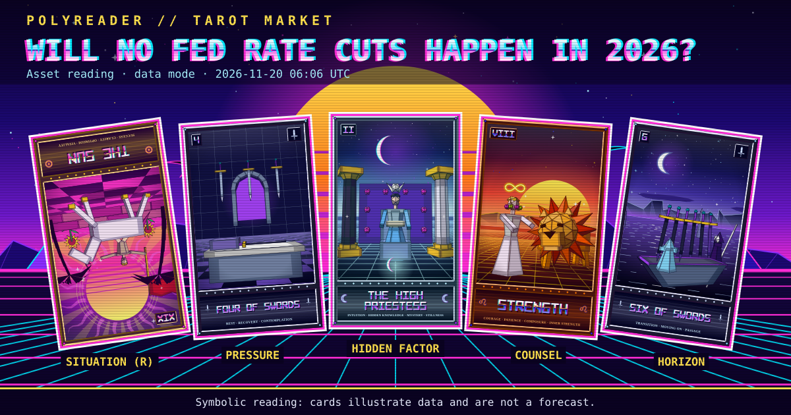

home / readings / Asset reading
- data mode
- Asset reading
- not registered for scoring
Data mode: the cards are a deterministic mapping from measured facts. They illustrate the data; they are not drawn by chance and do not foretell anything.
- Reading
asset_v1:data:616902:20261120T060601416424Z:8531e890f4ec- Created
- 2026-11-20T06:06:01.416424+00:00
- Seed commitment (sha256 of the seed, published before the draw)
- none: data mode uses no random seed
- Seed (revealed after the draw)
- none
- Deck / dictionary / interpretation
rws_v1/v1/interpret_v1; reversal policynone (deterministic data mapping); redraws 0
Evidence grade
no qualified research result
The cards
- 1. Situation The Sunreversed · overconfidence, dimmed joy, excess optimism
- 2. Pressure Four of Swordsupright · rest, recovery, contemplation
- 3. Hidden Factor The High Priestessupright · intuition, hidden knowledge, mystery, stillness
- 4. Counsel Strengthupright · courage, patience, composure, inner strength
- 5. Horizon Six of Swordsupright · transition, moving on, passage
Interpretation
Asset reading (asset_v1)
- labelMode: Data reading: cards illustrate the market data
- labelCard selection: Deterministic mapping from measured facts
- labeldata cards: a deterministic illustration of measured facts, not a draw
Situation: Where does this market stand now?
- symbolicThe Sun (reversed): Overconfidence: a crowded favourite in full sunshine. When everyone agrees, small surprises cost the most.
- ruleplaced by crowded_favorite_sun_reversed: favourite priced at 0.90 or above
- factprice = 0.983 price units (USDC/share) (source: parquet:markets (Gamma snapshot gamma-api.polymarket.com/markets/616902, retrieved 2026-11-20T05:30:13.902266+00:00) midpoint of bestBid/bestAsk, observed 2026-11-20T05:30:13.902266+00:00)
Pressure: What force is acting on the price?
- symbolicFour of Swords: Rest. A quiet market, and a reminder that not trading is allowed.
- ruleplaced by quiet_four_swords: 7d change smaller than 0.02 in either direction
- factchange_7d = -0.001 price units (source: parquet:observations token 124036029200... (from data-api.polymarket.com/v2/prices-history?token_id=<yes>) (point 2026-11-20T05:25:44+00:00 minus point 2026-11-13T05:30:00+00:00), observed 2026-11-20T05:25:44+00:00)
Hidden Factor: What is uncertain, thin, or easy to overlook?
- symbolicThe High Priestess: Something is not yet public. The honest stance is to admit what cannot be known from the visible tape.
- ruleplaced by fallback:hidden: no rule fired for this position; neutral default card
- factspread = 0.001 price units (source: parquet:markets (Gamma snapshot gamma-api.polymarket.com/markets/616902, retrieved 2026-11-20T05:30:13.902266+00:00) bestAsk minus bestBid, observed 2026-11-20T05:30:13.902266+00:00)
- factliquidity = 177,415 USD (source: parquet:markets (Gamma snapshot gamma-api.polymarket.com/markets/616902, retrieved 2026-11-20T05:30:13.902266+00:00) field liquidityNum, observed 2026-11-20T05:30:13.902266+00:00)
- factdata_quality = 1 completeness score (source: polyreader completeness score (8 of 8 facts; offline), observed 2026-11-20T05:30:13.902266+00:00)
Counsel: What stance or discipline fits these conditions?
- symbolicStrength: Discipline under pressure: holding a reasoned view calmly while the price argues with you.
- ruleplaced by counsel_strength_crowded: price at an extreme (0.90+ or 0.10-): discipline against the crowd
- factprice = 0.983 price units (USDC/share) (source: parquet:markets (Gamma snapshot gamma-api.polymarket.com/markets/616902, retrieved 2026-11-20T05:30:13.902266+00:00) midpoint of bestBid/bestAsk, observed 2026-11-20T05:30:13.902266+00:00)
Horizon: What does the time to resolution suggest?
- symbolicSix of Swords: A passage to calmer water: leaving a turbulent situation for a steadier one.
- ruleplaced by fallback:horizon: no rule fired for this position; neutral default card
- factdays_to_resolution = 41.978 days (source: parquet:markets (Gamma snapshot gamma-api.polymarket.com/markets/616902, retrieved 2026-11-20T05:30:13.902266+00:00) field endDate minus as_of, observed 2026-11-20T05:30:13.902266+00:00)
Opening chart (convention: accepting_orders / created; symbolic context, not evidence)
- noteChart facts describe the sky at the market's published opening timestamps. No astrology result qualifies as evidence for them.
- factchart_accepting_orders_birth = 2025-09-29T22:24:25+00:00 UTC (verified_instant) (source: chart (convention: accepting_orders); polyreader.ephemeris (skyfield, de421, tropical, geocentric apparent); birth from Gamma acceptingOrdersTimestamp, observed 2025-09-29T22:24:25+00:00)
- factchart_accepting_orders_sun_sign = libra tropical sign (source: chart (convention: accepting_orders); polyreader.ephemeris (skyfield, de421, tropical, geocentric apparent); birth from Gamma acceptingOrdersTimestamp, observed 2025-09-29T22:24:25+00:00)
- factchart_accepting_orders_moon_sign = capricorn tropical sign (source: chart (convention: accepting_orders); polyreader.ephemeris (skyfield, de421, tropical, geocentric apparent); birth from Gamma acceptingOrdersTimestamp, observed 2025-09-29T22:24:25+00:00)
- factchart_accepting_orders_moon_phase = first quarter phase name (source: chart (convention: accepting_orders); polyreader.ephemeris (skyfield, de421, tropical, geocentric apparent); birth from Gamma acceptingOrdersTimestamp, observed 2025-09-29T22:24:25+00:00)
- factchart_accepting_orders_moon_phase_deg = 89.3 degrees (source: chart (convention: accepting_orders); polyreader.ephemeris (skyfield, de421, tropical, geocentric apparent); birth from Gamma acceptingOrdersTimestamp, observed 2025-09-29T22:24:25+00:00)
- factchart_accepting_orders_mercury_retrograde = False flag (source: chart (convention: accepting_orders); polyreader.ephemeris (skyfield, de421, tropical, geocentric apparent); birth from Gamma acceptingOrdersTimestamp, observed 2025-09-29T22:24:25+00:00)
- factchart_created_birth = 2025-09-29T13:23:19.152108+00:00 UTC (verified_instant) (source: chart (convention: created); polyreader.ephemeris (skyfield, de421, tropical, geocentric apparent); birth from Gamma createdAt, observed 2025-09-29T13:23:19.152108+00:00)
- factchart_created_sun_sign = libra tropical sign (source: chart (convention: created); polyreader.ephemeris (skyfield, de421, tropical, geocentric apparent); birth from Gamma createdAt, observed 2025-09-29T13:23:19.152108+00:00)
- factchart_created_moon_sign = capricorn tropical sign (source: chart (convention: created); polyreader.ephemeris (skyfield, de421, tropical, geocentric apparent); birth from Gamma createdAt, observed 2025-09-29T13:23:19.152108+00:00)
- factchart_created_moon_phase = first quarter phase name (source: chart (convention: created); polyreader.ephemeris (skyfield, de421, tropical, geocentric apparent); birth from Gamma createdAt, observed 2025-09-29T13:23:19.152108+00:00)
- factchart_created_moon_phase_deg = 85.09 degrees (source: chart (convention: created); polyreader.ephemeris (skyfield, de421, tropical, geocentric apparent); birth from Gamma createdAt, observed 2025-09-29T13:23:19.152108+00:00)
- factchart_created_mercury_retrograde = False flag (source: chart (convention: created); polyreader.ephemeris (skyfield, de421, tropical, geocentric apparent); birth from Gamma createdAt, observed 2025-09-29T13:23:19.152108+00:00)
Data provenance
- factmarket_question = Will no Fed rate cuts happen in 2026? text (source: parquet:markets (Gamma snapshot gamma-api.polymarket.com/markets/616902, retrieved 2026-11-20T05:30:13.902266+00:00), observed 2026-11-20T05:30:13.902266+00:00)
- factfamily = economics label (source: parquet:markets (Gamma snapshot gamma-api.polymarket.com/markets/616902, retrieved 2026-11-20T05:30:13.902266+00:00) (rule classifier), observed 2026-11-20T05:30:13.902266+00:00)
- factcategory = Economy label (source: parquet:markets (Gamma snapshot gamma-api.polymarket.com/markets/616902, retrieved 2026-11-20T05:30:13.902266+00:00), observed 2026-11-20T05:30:13.902266+00:00)
- factpriced_outcome = Yes outcome label (price is for this token) (source: parquet:markets (Gamma snapshot gamma-api.polymarket.com/markets/616902, retrieved 2026-11-20T05:30:13.902266+00:00), observed 2026-11-20T05:30:13.902266+00:00)
- factlive_status = offline: Parquet store snapshot, not live provenance (source: polyreader.readings.facts, observed 2026-11-20T05:30:13.902266+00:00)
- factdata_as_of = data as of 2026-11-20T05:30:13.902266+00:00 (stored snapshot; forecast time 2026-11-20T05:30:13.902266+00:00) timestamp (source: parquet:markets, observed 2026-11-20T05:30:13.902266+00:00)
Evidence grade
- notestrongest qualified research result: no qualified research result
Caveats
- noteCard meanings are symbolic prompts for reflection, not factual findings and not forecasts.
- noteNo numeric forecast is shown: none was supplied by an identified model, and cards cannot produce one.
Facts
Every factual statement the reading used, with its source and as-of time. Cards never produce these. Source addresses are printed as plain text without their scheme: the site loads and links nothing outside itself.
| fact | value | unit | kind | source | observed |
|---|---|---|---|---|---|
| price | 0.9825 | price units (USDC/share) | fact | parquet:markets (Gamma snapshot gamma-api.polymarket.com/markets/616902, retrieved 2026-11-20T05:30:13.902266+00:00) midpoint of bestBid/bestAsk | 2026-11-20T05:30:13.902266Z |
| spread | 0.001 | price units | fact | parquet:markets (Gamma snapshot gamma-api.polymarket.com/markets/616902, retrieved 2026-11-20T05:30:13.902266+00:00) bestAsk minus bestBid | 2026-11-20T05:30:13.902266Z |
| change_24h | 0 | price units | fact | parquet:observations token 124036029200... (from data-api.polymarket.com/v2/prices-history?token_id=<yes>) (point 2026-11-20T05:25:44+00:00 minus point 2026-11-19T05:30:00+00:00) | 2026-11-20T05:25:44Z |
| change_7d | -0.0005 | price units | fact | parquet:observations token 124036029200... (from data-api.polymarket.com/v2/prices-history?token_id=<yes>) (point 2026-11-20T05:25:44+00:00 minus point 2026-11-13T05:30:00+00:00) | 2026-11-20T05:25:44Z |
| volume_24h | 15497.5 | USD | fact | parquet:markets (Gamma snapshot gamma-api.polymarket.com/markets/616902, retrieved 2026-11-20T05:30:13.902266+00:00) field volume24hr | 2026-11-20T05:30:13.902266Z |
| volume_avg_7d | 19650.2 | USD per day | fact | parquet:markets (Gamma snapshot gamma-api.polymarket.com/markets/616902, retrieved 2026-11-20T05:30:13.902266+00:00) field volume1wk / 7 | 2026-11-20T05:30:13.902266Z |
| liquidity | 177415 | USD | fact | parquet:markets (Gamma snapshot gamma-api.polymarket.com/markets/616902, retrieved 2026-11-20T05:30:13.902266+00:00) field liquidityNum | 2026-11-20T05:30:13.902266Z |
| days_to_resolution | 41.978 | days | fact | parquet:markets (Gamma snapshot gamma-api.polymarket.com/markets/616902, retrieved 2026-11-20T05:30:13.902266+00:00) field endDate minus as_of | 2026-11-20T05:30:13.902266Z |
| data_quality | 1 | completeness score | fact | polyreader completeness score (8 of 8 facts; offline) | 2026-11-20T05:30:13.902266Z |
| crowded_favorite_sun_reversed | favourite priced at 0.90 or above | rule | data_rules_v1 | ||
| quiet_four_swords | 7d change smaller than 0.02 in either direction | rule | data_rules_v1 | ||
| fallback:hidden | no rule fired for this position; neutral default card | rule | data_rules_v1 | ||
| counsel_strength_crowded | price at an extreme (0.90+ or 0.10-): discipline against the crowd | rule | data_rules_v1 | ||
| fallback:horizon | no rule fired for this position; neutral default card | rule | data_rules_v1 |
Subject
| kind | market |
|---|---|
| venue | polymarket_global |
| market_id | 616902 |
| event_id | 51456 |
| condition_id | 0xd4e77ba6f29fc093509d24f508631abd445ecf506bbdc9c4c80e60256a318527 |
| slug | will-no-fed-rate-cuts-happen-in-2026 |
| question | Will no Fed rate cuts happen in 2026? |
| family | economics |
| category | Economy |
| token_id | 12403602920039269077597917340921667997547115084613238528792639013246536343316 |
| outcome | Yes |
| end_date | 2027-01-01T04:59:00+00:00 |
| closed | False |
| live | False |
| as_of | 2026-11-20T05:30:13.902266+00:00 |
Share image
1200 × 630, generated with the page: asset_v1-data-616902-20261120T060601416424Z-8531e890f4ec.svg

